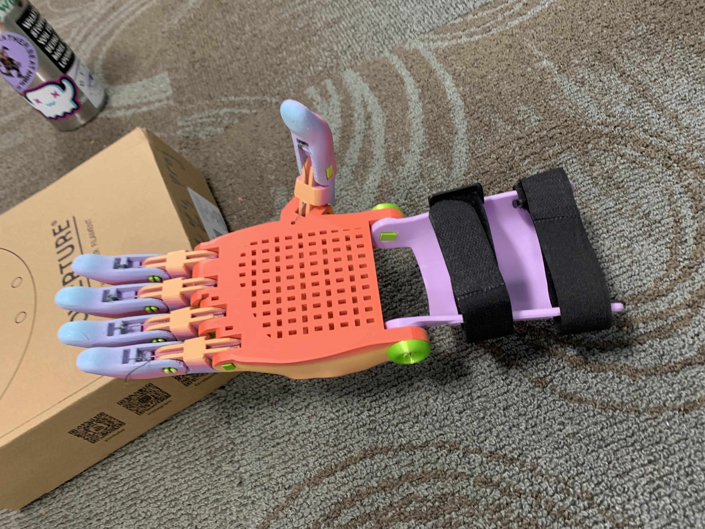
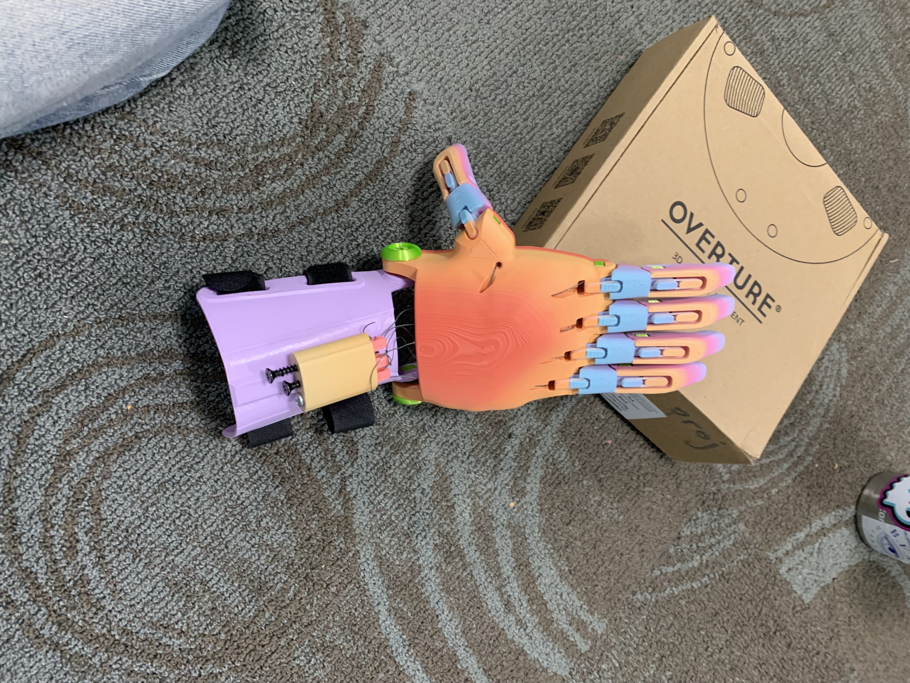
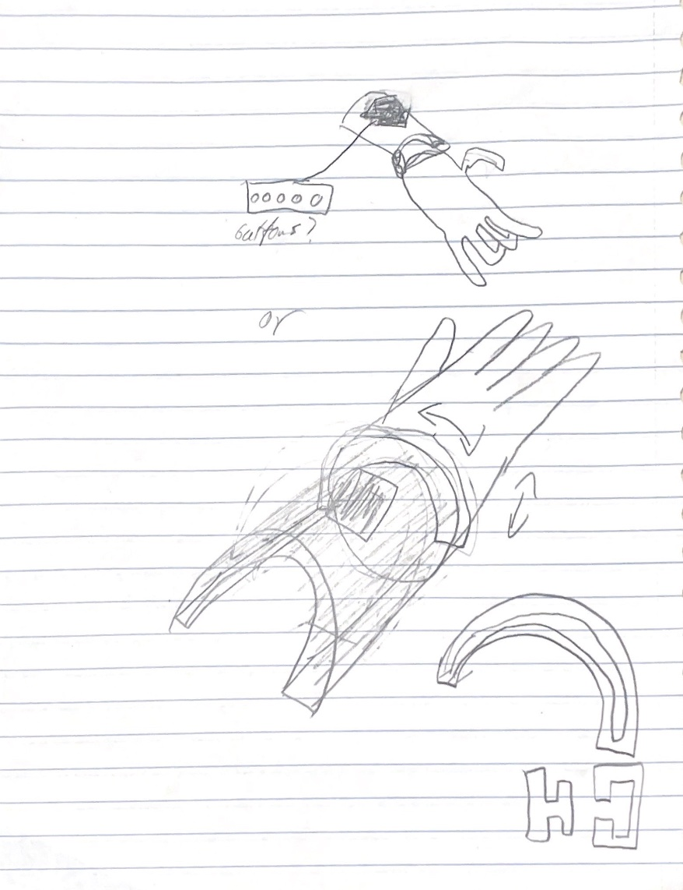
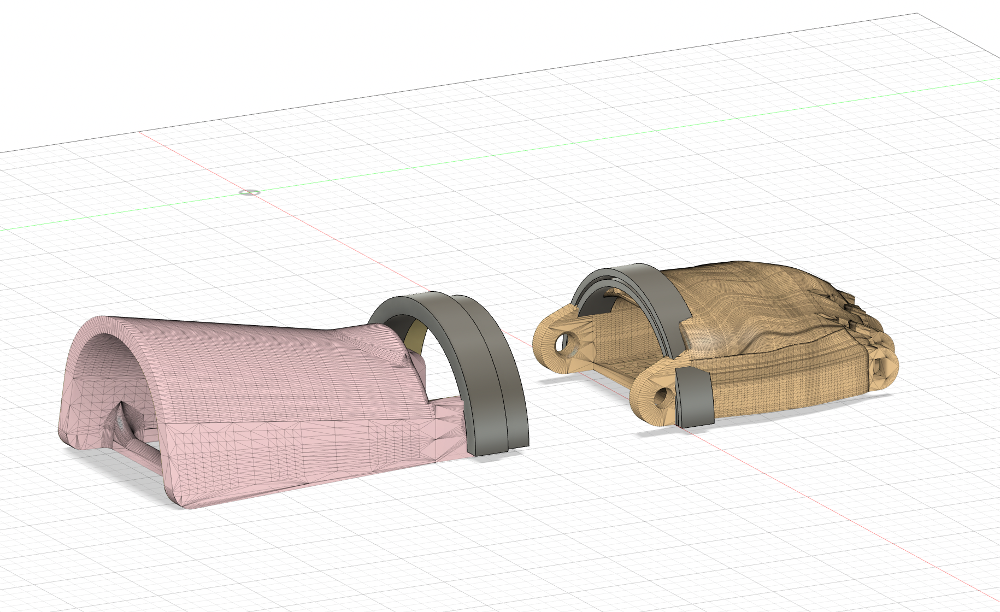
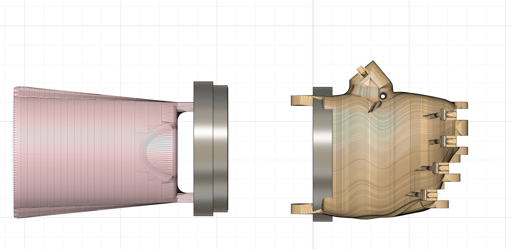

thinking about accessibility and building for interaction with the world
Great! I was very excited to start this project because the 3D printing is very cool and the physical construction aspect gets more in depth and fun. I think that the conversations around this project were important as well, thinking about an engineers role in helping others lives when they truly have no way of knowing the extent to which the persons problem affects them is an interesting and important challenge in the field of engineering. For this project, I worked with Zoe Schurman in printing and building the hand, but worked seperately on the design aspect.
Printing the Hand
Actually printing the hand was one of the harder parts of this project! Mostly because both Zoe and I were unavailable for much of the given class-time. I had many holidays and Zoe was in different places so all-in-all we missed most all of the class time we had to work on it. We persevered, though! Zoe helped print and gather the rest of the pieces we didn't get to in the first class, and I built most of it on office hours with Penny!
 Final Print!
Comments on interaction
This project brought up interesting questions and conversation about interaction with the world, our role as engineers, and what it means to help people with disabilities. How is it possible to design for a problem I don't experience? It is impossible for me to understand the full scope of the problem, how it effects a person day-to-day, and is it even my responsibility to help another person with a problem I know nothing about? Professor Krones expressed his uncomfortable feelings around the project, referencing the fact that these are helpful devices but we are using it in not a truly helpful way. To make these truly helpful, we would need to work one-on-one with a person, measure their arm, see exactly what they need prostetic wise. This is not what we were doing.
Going into the next aspect of the project, designing for a more specific hand function, I had to think about and consider these questions. This question made me think about Hendrens' reading which talked about interaction with the world around you. There is friction in many many day-to-day activities, even for people without disabilities, the goal is to lighten the amount of friction. Looking at the hand e-NABLE Pheonix design, it is quite limited... All the fingers need to bend in the same way at the same time, to grab, the hand needs to be pointed down leading to weird arm placement, and the mobility is very limited. I took these ideas in the limitations and decided to design a solution that solves for both mobility and independent finger movement (as much as I could)
My first idea (seen at the top) was an opposite handheld device that would allow for fully independent finger movement. This though felt weird because it would be very complex, exhausting, would not allow for multiple hand usage, and some people do not have either hand.
So my second iteration allowed for both independent finger movement with only one hand! This would put the hand on a 360° pivot! This would allow the hand to have more mobility, moving on an axis, and allow the finger movements based on the pivot! When a hand is turned laterally, the lateral fingers will bend.
3D modeling
The 3D CAD component was just fleshed out sketching, so I made a cuff that allows for pivoting the hand in a 360° angle!
 Final Design!